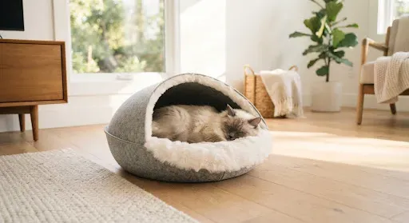
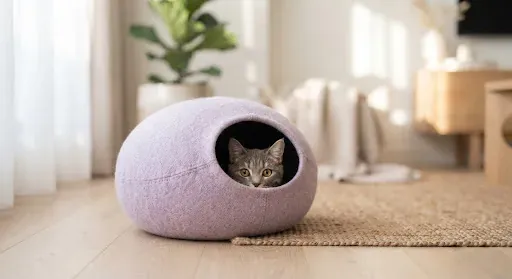
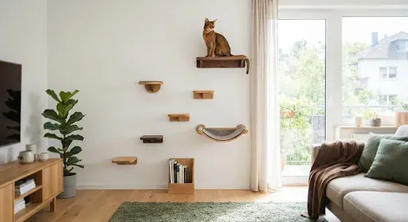
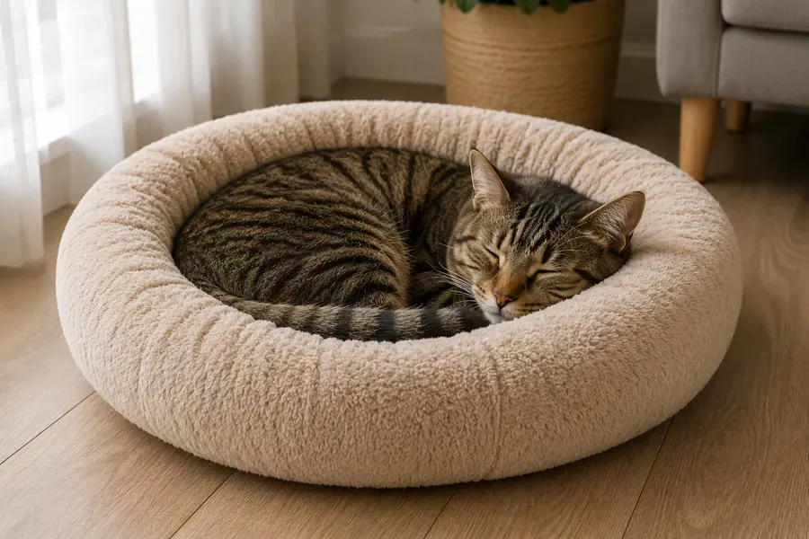
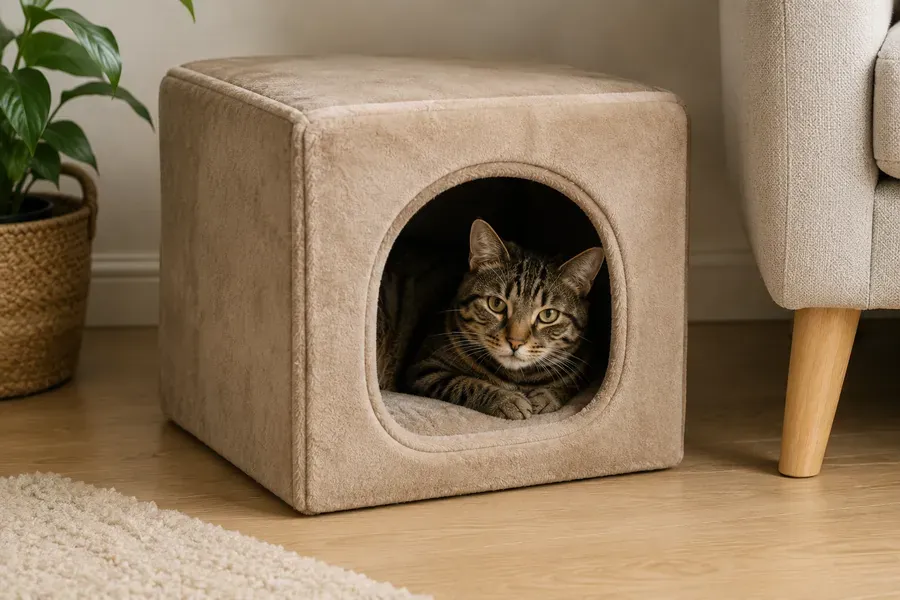

Ұйқы мен демалыс: тамаша орын жасау
Кеңістікті дұрыс ұйымдастыру үй жануарыңыздың дене және психикалық денсаулығына тікелей әсер етеді.
1Жалпы ереже: тыныш баспаналар
Әр мысықтың ешкім мазаламайтын орны болуы керек: қораптар, тоннельдер немесе флис кокондары.

2Беттердің әртүрлілігі
Мысықтар таңдауды бағалайды — жұмсақ плюш төсеніштерден қарапайым картон қораптарға дейін, әр орынның күннің әртүрлі уақытында өз мәні бар. Мысығыңызға жеке нендей нәрсе ұнайтынын бақылап көріңіз.
Нұсқалары: жұмсақ төсеніштер, қораптар, сөрелер.

3Тік кеңістік
Биік бақылау нүктелері мысықтарға аумақты бақылауға мүмкіндік беріп, стресс пен мазасыздық деңгейін төмендетеді. Бұл аумаққа келу мен кетудің бірнеше жолы болғаны маңызды.
Минималисттік қабырға сөрелері; көп деңгейлі ойын кешендері.

4Прайдтағы үйлесімділік
Бірнеше үй жануары бар үйде тамаша демалыстың формуласы қарапайым: N + 1. Ресурстар үшін бәсекелестікті болдырмау үшін төсеніштер саны мысықтар санынан бір артық болуы керек. Ал одан да көп болып, әртүрлі жерлерде орналасса — тіпті жақсы.

5Төсеніш түрлері
Жабық үй-капсулалар — демалу кезінде жасырынуды жақсы көретін мысықтарға тамаша.
Жиекті — жиектері биік жұмсақ себеттер, домалақтанып ұйықтауды жақсы көретін мысықтарға тамаша.
Гамактар — жылыту радиаторларына, орындық аяқтарына немесе терезелерге бекітілетін аспалы құрылымдар; биіктікте демалуды жақсы көретін белсенді үй жануарларының сүйікті орны.
Матрастар мен кілемшелер — жылжымалы жалпақ төсеніштер, ірі мысықтарға немесе бойын толық созып ұйықтауды жақсы көретіндерге жарайды.
Төсеніштер — күнделікті пайдалануға арналған шаршы немесе тіктөртбұрышты жұмсақ нұсқалар.

Осы бөлімде тағы
Қосымшадағы ақпарат ашық дереккөздерден және мысық иелерінің тәжірибесінен жинақталған. Ол ветеринардың кеңесі мен тексеруін алмастырмайды. Үй жануарының денсаулығы мен күтіміне қатысты шешімдерді иесі қабылдайды — кез келген күмән туындаса, ветеринарға жүгініңіз.
Мұның бәрі Cat First қосымшасында бар
Мақалалар, тексеру тізімдері және алғашқы көмек телефоныңызда, интернетсіз де.